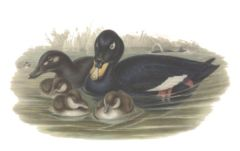
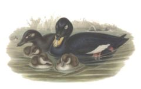

| Velvet Scoter | |
|---|---|
|  | |
| Conservation status | |
| Binomial name | |
| Melanitta fusca (Linnaeus, 1758) |
| Velvet Scoter | |
|---|---|
|  | |
| Conservation status | |
| Binomial name | |
| Melanitta fusca (Linnaeus, 1758) |
The Velvet Scoter (Melanitta fusca), also called a Velvet Duck or whitewing (not to be confused with the white-winged scoter), is a large sea duck, which breeds over the far north of Europe and Asia west of the Yenisey basin. A small, isolated population nests in eastern Turkey. The East Siberian and North American White-winged Scoter is sometimes considered conspecific with the Velvet Scoter, and its two constituent subspecies are then known as M. f. stejnegeri and M. f. deglandi. Velvet and White-winged Scoter, along with the Surf Scoter, are placed in the subgenus Melanitta, distinct from the subgenus Oidemia, Black and Common Scoters.
It winters further south in temperate zones, Europe as far south as Great Britain, and on the Black and Caspian Sea. Small numbers reach France and northern Spain. It forms large flocks on suitable coastal waters. These are tightly packed, and the birds tend to take off together.
The lined nest is built on the ground close to the sea, lakes or rivers, in woodland or tundra. 7-9 eggs are laid. This duck dives for crustaceans and molluscs.
It is characterised by its bulky shape and large bill. It is the largest scoter at 51–58 cm. The male is all black, except for white around the eye and a white speculum. It has a bulbous yellow bill with a black base. The females are brown birds with two pale patches on each side of the head and white wing patches.
The Velvet Scoter is one of the species to which the Agreement on the Conservation of African-Eurasian Migratory Waterbirds (AEWA) applies.

{kind=link}